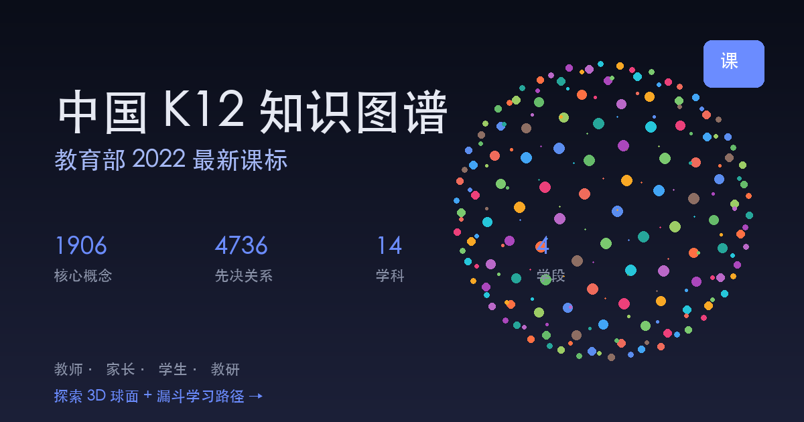

按 2022 年义务教育课程标准整理
把知识，转成一张
可以走进去的图。
拖动、旋转，任选一个知识点。
看看它从哪里来，又会通向哪里。
拖动探索 · 点击节点看关系
全屏探索 ↗
为什么是“图谱”
题目告诉你错了。
关系才可能告诉你，
哪里还没有连上。
学习不是把更多知识塞进去，而是在恰当的时候重新看见它们之间的关系。一个孩子卡住，也许不是不会，而是前面某个环节还没有真正成为自己的理解。
这张图不替任何人下结论。它把课程标准、概念与学习路径摊开，让家长、老师和学习者可以从一个具体问题开始，一起讨论下一步。
一份可被校对的公共尝试
这张图里有什么。
它不是封闭的“AI 诊断黑箱”。数据、关系和项目过程公开可见，也欢迎被使用、被质疑和被继续完善。
14 门学科从数学、语文、英语到科学、艺术、信息科技与更多。
1,906 个概念按课程标准整理，成为可搜索、可连接、可继续讨论的知识节点。
4,736 条路径呈现概念之间的学习关系，而不是把它们放在孤立的题库里。
基础结构按教育部 2022 年义务教育课程方案和课程标准整理。练习与视频用于探索，不等同于对学习状况的结论；请结合真实学习过程与专业判断。
从一个想弄懂的地方开始。
这张图已经在转动。接下来，选一个你关心的知识点。
打开完整知识图谱 →